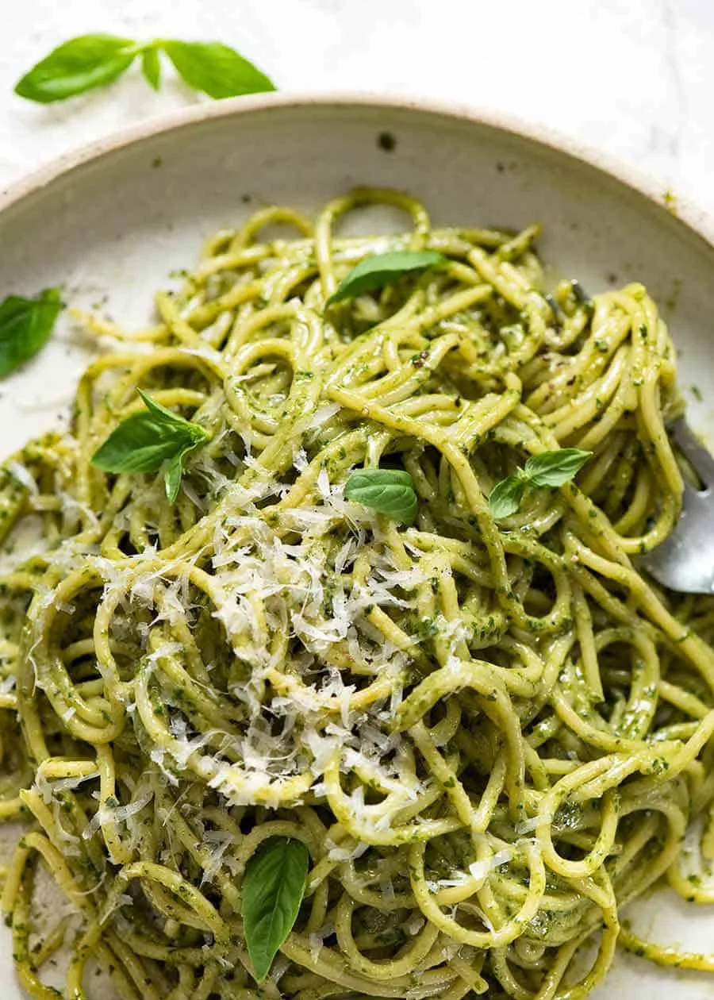

Lasagna recipe
Home

Description
Anyone can make a Pesto Pasta, but not everyone knows how to make a pesto
pasta that’s slick with plenty of pesto sauce without adding tons of extra
oil! Here’s how I make it.
Ingredients
- 1 quantity homemade pesto
- 300 - 350 g / 10 - 12 oz pasta of choice
- 2 tsp salt
- 3/4 cup pasta cooking water
- Parmesan, for serving
Steps
Let's cook
- Bring a large pot of water to the boil with the salt.
- Add pasta and cook for the length of time per the packet.
-
Just before draining, scoop out 1 cup of of the pasta cooking water.
- Drain pasta in a colander, leave it for a minute.
- Transfer pasta to a bowl (do not use pasta cooking pot, too hot).
-
Add pesto and 1/4 cup of pasta water. Toss to coat pasta in pesto,
adding more water if required to make pasta silky and saucy, rather than
dry and sticky.
- Taste, add more salt and pepper if desired.
- Serve immediately, garnished with fresh parmesan.